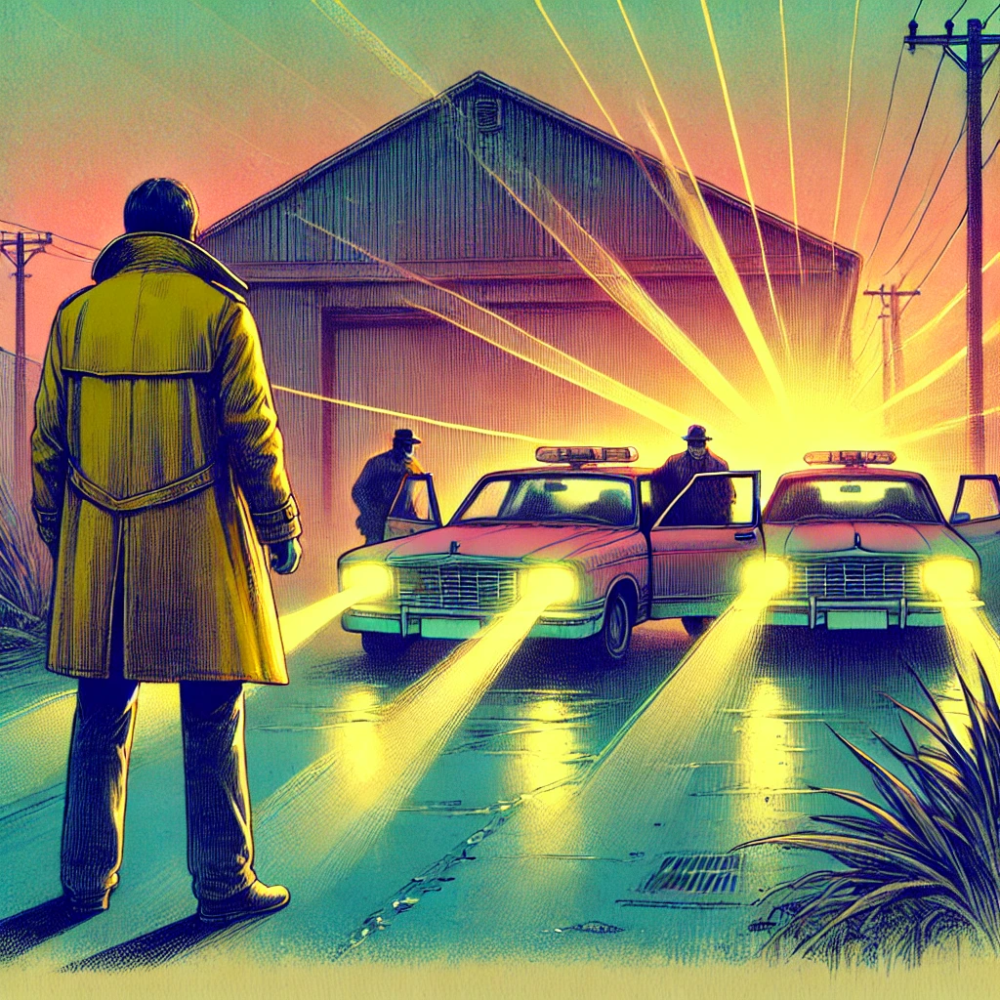

11. Dezember
Flucht nach Ostia
Die letzten Sonnenstrahlen verschwanden hinter den staubigen Fenstern der Lagerhalle.Die Dunkelheit breitete sich langsam in jede Ecke des Raumes aus. Es war Zeit zu handeln.
„Hans, wir müssen sofort nach Ostia!“ rief Johann, während er den Brief und das Handy in seiner Tasche verstaute. Seine Stimme war fest, doch seine Hände zitterten. „Carlos hat es gesagt. Wir sind hier nicht mehr sicher.“
Hans erstarrte, seine Gesichtszüge wurden schlagartig bleich. „Nach Ostia?“ Er schüttelte langsam den Kopf, dann atmete er kurz durch. “ Federico? Where did you park the car?.“
Der Typ im gelben Mantel antwortet :” I returned the Taxi as you had asked me to and came back by Bus”
Hans fluchte “Wie sollen wir jetzt wegkommen? Die Anweisung war doch klar gewesen! Du bringst Deinen Wagen her!”
Johann trat ungeduldig von einem Fuß auf den anderen. „Dann rufen wir ein neues Taxi. Wir dürfen keine Zeit verlieren!“
Hans schien kurz zu überlegen, dann zog er widerwillig sein Handy hervor. Mit zitternden Fingern wählte er eine Nummer. Während es klingelte, begann er, sein Nikolauskostüm hastig auszuziehen. Johann beobachtete ihn – und dann durchzuckte ihn ein Blitz der Erkenntnis.
„Du bist der Mann aus Rom!“ Johann wich instinktiv einen Schritt zurück, als das vertraute Gesicht unter der Nikolaushaube zum Vorschein kam. „Der, der mich beobachtet hat! Du hast mich verfolgt! Warum?“
Hans hob die Hände, als wolle er den Jungen beruhigen. „Ich kann das erklären. Aber nicht jetzt. Später, versprochen.“
Das Klingeln wurde abrupt durch ein anderes Geräusch übertönt: das laute Dröhnen von Motoren und das Quietschen von Reifen. Johann fuhr herum und rannte zum Fenster. Mehrere Autos hielten mit quietschenden Bremsen vor der Lagerhalle. Er sah, wie Türen aufgingen und fünf Männer ausstiegen. In einem von Ihnen meinte er den Tourist aus Lissabon zu erkennen. Er hatte die gleiche Statur wie Hans..
„Wir müssen weg!“ flüsterte Johann panisch, doch seine Stimme war fast verloren in dem Knarren der Lagerhallentür, die unter einem kräftigen Stoß aufsprang.
„Zum Hinterausgang! Sofort!“ rief der Typ im gelben Mantel, während er zur grossen Vordertür stürmte. „Ich gebe euch Rückendeckung. Beeilt euch, verdammt!“
Hans packte Johann am Arm und zog ihn mit sich. Sie stürmten durch die Lagerhalle, ohne zurückzublicken, und rissen die Hintertür auf. Die kühle Nachtluft schlug ihnen entgegen, während sie durch eine enge Gasse rannten. Johann hörte hinter sich Stimmen und das Klappern schwerer Stiefel, doch er traute sich nicht, den Kopf zu drehen.
Plötzlich sah er die Hauptstraße vor ihnen, und dort – wie ein Wunder – das Taxi, das Hans gerufen hatte. Der Fahrer war gerade ausgestiegen, um zu rauchen, und sprang erschrocken zur Seite, als Hans und Johann auf die Rückbank hechteten. „Fahren Sie! Jetzt!“ brüllte Hans, noch außer Atem.
Der Fahrer starrte sie verwirrt an, trat dann aber aufs Gas. Das Taxi schoss in die Nacht davon, doch die Spannung in der Luft ließ nicht nach. Johann spähte aus dem Fenster, doch niemand schien ihnen zu folgen.
„Warum steigen wir hier aus?“ fragte Johann entsetzt, als Hans den Fahrer nach einiger Zeit aufforderte am Strassenrand anzuhalten.
„Wir dürfen keine Spur hinterlassen“, erklärte Hans, während er ausstieg und Johann mit sich zog. „Wir müssen den Rest zu Fuß gehen.“
Sie kletterten über einen Zaun und fanden sich auf einem offenen Feld wieder. Vor ihnen erstreckte sich ein düsteres Panorama aus Ruinen und zerfallenen Tempeln – die antike Hafenstadt Ostia. Das Mondlicht legte sich silbern auf die Überreste der alten Welt, die in der Dunkelheit fast unheimlich wirkten.
„Sind wir hier sicher?“ fragte Johann atemlos, während er kurz anhielt und sich umdrehte.
„Nicht lange“, antwortete Hans, seine Stimme knapp. Er warf einen Blick zurück, als könnte er die Gefahr im Dunkel erahnen, und deutete nach vorne. „Komm, wir müssen noch ein Stück weiter!“
Sie erreichten das Ende der Ruinen, wo ein Zaun die Grenze zwischen der antiken Stadt und der modernen Welt markierte. Hans half Johann hinüber, und die beiden kletterten vorsichtig auf die andere Seite. Dort, auf einer dunklen Straße, ragte ein kleines Haus mit leuchtendem Fenster hervor. Ohne ein Wort zogen sie sich in den Schatten und näherten sich der Eingangstür.
Hans klingelte, während Johann sich unruhig umsah. Sein Herz hämmerte, und er fragte sich, ob sie verfolgt worden waren. Dann öffnete sich die Tür mit einem leisen Knarzen.
Ein kleines Mädchen stand im Türrahmen, vielleicht neun Jahre alt. Ihre Augen weiteten sich, als sie Hans erkannte, und ein strahlendes Lächeln breitete sich auf ihrem Gesicht aus.
„Papa!“ rief sie freudig und sprang ihm in die Arme.
Johann starrte verblüfft. Papa? Hans lachte, ein herzliches, freies Lachen, das Johann noch nie von ihm gehört hatte. Doch die Erleichterung währte nur einen Moment. Hans sah sich hektisch um, seine Miene wurde ernst.
„Schnell rein, alle! Wir dürfen keine Zeit verlieren!“
Das Mädchen führte sie ins Haus, während Hans die Tür hinter ihnen verschloss und mehrfach verriegelte. Johann schaute sich um. Es war ein einfaches, aber gemütliches Zuhause. Bilder hingen an den Wänden, ein alter Teppich lag auf dem Holzboden, und der Duft von frischem Brot hing in der Luft.
Hans legte dem Mädchen eine Hand auf die Schulter und deutete auf die Treppe. „Geh nach oben zu deiner Mutter, Schatz. Wir reden später.“
Das Mädchen nickte und lief die Treppe hinauf, während Johann Hans fragend ansah. Doch bevor er etwas sagen konnte, wandte sich Hans mit einem leichten Lächeln an ihn.
„Ich wusste nicht, ob wir es schaffen würden. Aber jetzt sind wir zumindest für eine Weile in Sicherheit. Du kannst in Magdalenas Zimmer schlafen, ich bleibe im Wohnzimmer. Sicher ist sicher.“
Was soll Johann tun?
- Johann drängt Hans zur Rede: Wer verfolgt uns und warum?
- Johann durchsucht das Haus nach Hinweisen: Irgendetwas an Hans’ Verhalten kommt ihm seltsam vor. Vielleicht gibt es hier Antworten, die ihm niemand geben will.
- Johann vertraut Hans: Er entscheidet sich, auf Hans zu hören und sich erst einmal auszuruhen. Morgen ist auch noch ein Tag, um Fragen zu stellen.
- Johann ruft Carlos an: Er will wissen, was hier eigentlich los ist.